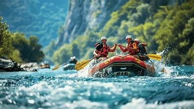

PARA INICIANTES
Rafting no Rio do Jacaré
Uma experiência para quem deseja conhecer o rafting e apreciar a natureza. O percurso combina trechos de águas mais tranquilas, paisagens verdes e momentos de integração entre os participantes. É uma oportunidade de aprender sobre o esporte e aproveitar o rio em grupo, sempre com orientação dos profissionais responsáveis.
- Perfil: iniciantes e grupos
- Experiência: natureza e integração
- Atividade: rafting recreativo